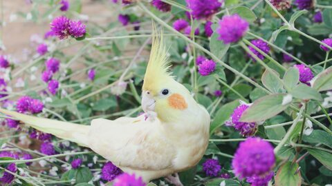
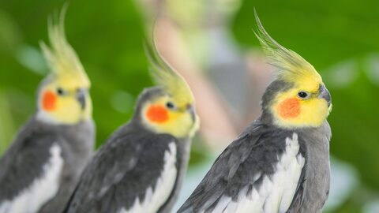
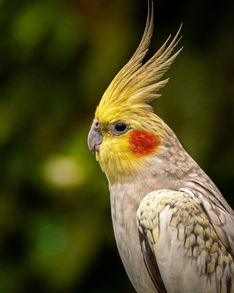
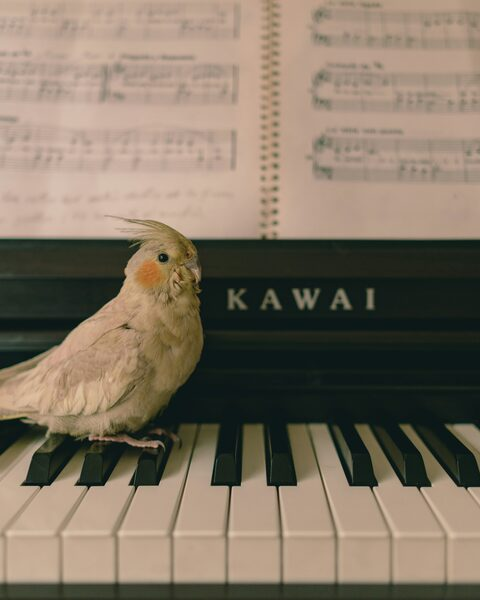
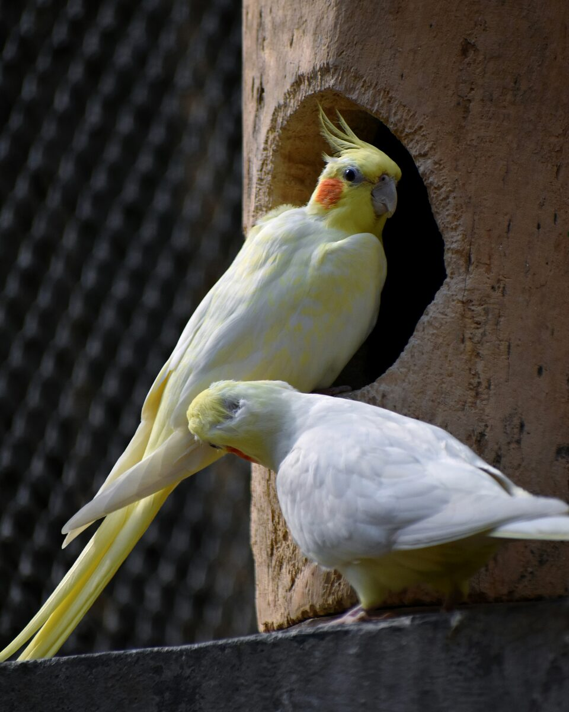

Da família Cacatuidae, as calopsitas são parentes distantes das cacatuas e dos papagaios. Conquistaram os brasileiros e se tornaram um dos passarinhos de estimação mais procurados do país.
Qual é a origem da calopsita?
Algumas pessoas confundem calopsitas com cacatuas. Apesar do tamanho muito diferente, as aves têm origens parecidas: ambas são nativas da Austrália, e as duas pertencem à ordem dos psitacídeos, como os papagaios.
Os primeiros relatos sobre a espécie datam de 1792. Também chamadas de caturras, foram domesticadas por volta de 1800 e logo levadas ao continente europeu. No Brasil, chegaram apenas na década de 1970.
Não existem calopsitas silvestres no Brasil, já que vieram domesticadas da Austrália. Por isso não é recomendável soltá-las na natureza: este não é seu ambiente natural, e provavelmente não saberiam se alimentar nem se proteger.
A coloração cinza com bochechas alaranjadas é a original da espécie.
Quais os tipos de calopsitas?
Existem mais de 20 mutações, o que torna a criação da espécie ainda mais interessante. As principais variedades são:
Branca
Cara branca
Albina
Lutino
Amarela
Pérola
Azul
Cinza
Preta
Canela
Verde
Rosa
Vermelha
Reverso
Alguns tipos são mais incomuns que outros. Uma calopsita rara é a lutino cara branca, que é albina e, portanto, completamente branca.

Lutino

Cinza

Pérola

Canela
Temperamento e comportamento
As calopsitas são pets muito sociáveis e por isso entram na classificação das aves de contato: aquelas que gostam — e precisam — de ficar fora do recinto, receber carinho e interagir.
Os momentos de convivência com o tutor estão entre seus passatempos preferidos. Elas criam laços com quem vive ao seu redor e não gostam de ficar muito tempo sozinhas, o que as torna pouco indicadas para quem viaja muito ou passa o dia todo fora.
Quando você ouve uma calopsita "falando", ela está repetindo o que aprendeu ao imitar as pessoas — assim como os papagaios. O mesmo vale para o assobio: diferentemente do canário, calopsitas não têm um canto natural, elas reproduzem o que ouvem.
Sem canto próprio, a calopsita aprende assobios e melodias por imitação.
Como adestrar a sua calopsita?
O ideal é iniciar o adestramento quando a calopsita ainda é filhote. Até as 14 semanas de vida ela está em sua maior fase de aprendizado, e o treinamento tende a ser mais fácil.
Isso não significa que uma ave adulta não aprenda. Calopsitas são muito inteligentes e continuam aprendendo depois de crescidas — inclusive é recomendável ensinar truques e estimular a interação durante toda a vida, o que mantém a docilidade e evita o tédio.
Doenças mais comuns
Ao notar sua calopsita espirrando, vomitando ou com comportamento alterado, procure um médico-veterinário. As doenças mais frequentes na espécie são:
Ceratoconjuntivite
Ascaridiose
Coccidiose
Giardíase
Aspergilose
Clamidiose
Aves escondem doenças. É um instinto de sobrevivência: quando o sintoma se torna visível, o quadro já costuma estar avançado. Consultas regulares são a melhor prevenção. Ver os sinais de alerta.
Como saber o sexo da calopsita?
Não é possível identificar o sexo pelos órgãos genitais: no geral, esses animais não apresentam dimorfismo sexual aparente. Existem, porém, características físicas que ajudam a diferenciar macho e fêmea — e elas só aparecem após os seis meses de vida.
As fêmeas apresentam listras horizontais ou manchinhas amarelas na parte debaixo das penas da cauda. O rosto puxa mais para o cinza e as bochechas são mais claras. Já o macho tem as bochechas mais amareladas e o corpo mais acinzentado.
De todo modo, a recomendação é confirmar com um veterinário especialista em aves por meio do exame de sexagem. Algumas mutações só apresentam dimorfismo após um ano de vida.

Casais formam laços fortes e costumam permanecer próximos.